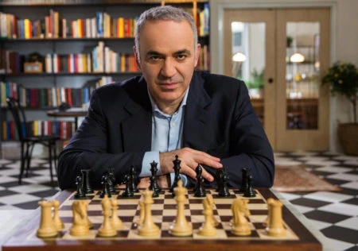

GM Garijs Kasparovs ir 13. pasaules čempions Pirmo reizi viņš sasniedza ranga pirmo numuru 1984. gadā un ar dažiem nelieliem izņēmumiem palika pirmais spēlētājs pasaulē līdz 2006. gadam. Kasparovs dominēja šaha pasaulē. vairāk nekā 20 gadus.
Savu augstāko reitingu 2856 Kasparovs sasniedza 2000. gada 3. martā — tajā laikā tas bija nepieredzēts skaitlis un rekords, kas netika pārspēts, kamēr Karlsens to nepārspēja.
1985. gadā Kasparovs uzvarēja Karpovu, aptuveni 22 ar pusi gadu vecumā kļūstot par visu laiku jaunāko pasaules čempionu. Viņš trīs reizes pēc kārtas aizstāvēja pasaules čempiona titulu pret Karpovu 1986., 1987. un 1990. gadā. 1993. gadā viņš atdalījās no FIDE un uzsāka PCA — šis pārtraukums radītu divus dažādus pasaules čempionātus līdz Kramņika un Topalova atkalapvienošanās spēlei 2006. gads.

GM-grandmaster jeb lielmeistars
FIDE-Starptautiskā Šaha federācija
PCA-Profesionālā šaha asociācija
Garry Kasparov visbiežāk lietoti šaha "atvērumi"
"Grunfeld defense"
sākas ar gājieniem: 1.d4 Nf6 2.c4 g6 3.Nc3
"Sicīlijas atklāšana"
Sākas ar gājieniem:1. e4 c5
"Ruy Lopez"
Sākas ar gājieniem:1. e4 e5 2. Nf3 Nc6 3. Bb5 a4
Pasaules čempions
Otrā Karpova-Kasparova spēle 1985. gadā tika organizēta Maskavā kā labākā no 24 spēlēm, kur pirmais spēlētājs, kurš izcīnījis 12½ punktus, pretendētu uz titulu. Rezultāti no pārtrauktās spēles netiks pārnesti; tomēr neizšķirta 12:12 gadījumā tituls paliktu Karpovam. 1985. gada 9. novembrī Kasparovs ieguva pasaules kroni ar rezultātu 13–11. Karpovam ar Vaitu bija jāuzvar 24. spēle, lai saglabātu titulu, bet Kasparovs to uzvarēja ar Sicīlijas aizsardzību. Viņam tajā laikā bija 22 gadi, padarot viņu par visu laiku jaunāko pasaules čempionu, kas vairāk nekā 20 gadus pieder Mihailam Tālam. Kasparova uzvara ar Bleku 16. geimā ir atzīta par vienu no visu laiku šaha šedevriem, tostarp atzīta par labāko spēli žurnāla Chess Informant pirmo 64 numuru laikā.
Kā daļu no pasākumiem pēc pārtrauktās 1984. gada spēles, Karpovam tika piešķirtas (viņa sakāves gadījumā) tiesības uz atkārtotu spēli. Vēl viens mačs notika 1986. gadā, kopīgi rīkojot Londonu un Ļeņingradu, un katrā pilsētā tika aizvadītas 12 spēles. Mača vienubrīd Kasparovs atklāja trīs punktu pārsvaru un labi izskatījās ceļā uz izšķirošo uzvaru. Taču Karpovs atspēlējās, uzvarot trīs geimos pēc kārtas, lai izlīdzinātu rezultātu mača beigās. Šajā brīdī Kasparovs atlaida vienu no savām sekundēm, lielmeistaru Jevgēņiju Vladimirovu, apsūdzot viņu par sava atklāšanas sagatavošanās pārdošanu Karpova komandai (kā aprakstīts Kasparova autobiogrāfijā Neierobežots izaicinājums, nodaļā Ducis mugurā). Kasparovs guva vēl vienu uzvaru un saglabāja savu titulu ar rezultātu 12½–11½.
Uz nākamo lapu